DRM Removal from Kindle eBook Purchases - 2026
Are you ready to Remove DRM from your Kindle Books Using Kindle for PC 2.8.0?
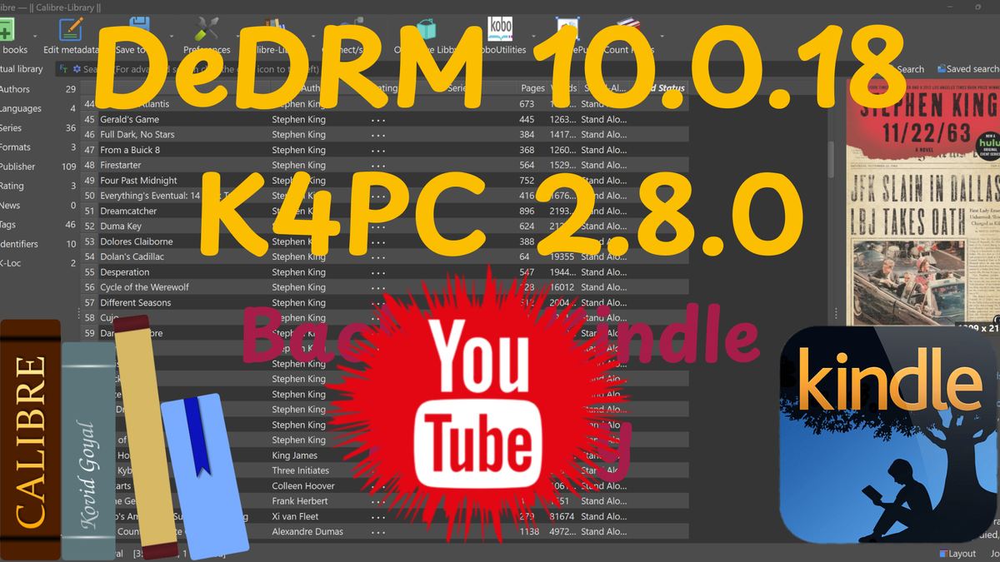
Valid as of 03-09-2026
(Note from Mildhasvoided here! I mirrored this site (scraped) from here and would like to say that while this is mirrored in a way that if you clone this repo for offline use it will work as fully intended, please occasionally check the official site. Since I use the tool, I will update this page as often as I can for everyone's experience!)
I DID NOT MAKE THIS TUTORIAL I MIRRORED THE PAGE FOR OFFLINE USE!
This tutorial covers the installation and usage of DeDRM v10.0.14 v10.0.15 v10.0.18 by noDRM (Modded by Satsuoni) for removing DRM protection from Kindle eBooks. This guide is for educational purposes only. Please ensure you comply with your local laws and only remove DRM from books you legally own.
DeDRM v10.0.14 DeDRM v10.0.15 DeDRM v10.0.18 by noDRM (Modded by Satsuoni) is a powerful tool that allows you to remove Digital Rights Management (DRM) protection from your legally purchased eBooks. This comprehensive guide will walk you through the entire process, from downloading the tools to successfully converting your protected Kindle books into DRM-free formats that you can read on any device.
This tutorial is designed for general users with step-by-step instructions and plenty of screenshots to make the process as straightforward as possible. No advanced technical knowledge is required.
What You'll Need
Before we begin, make sure you have:
- Calibre installed on your computer (the popular eBook management software)
- Kindle books downloaded to your computer (not just in the cloud) USING ONLY Kindle-For-PC version 2.8.0(70980)
-Kindle-For-PC you can find it at select the "Download for PC/MAC" (I have only tested this DeDRM in WINDOWS 11) HERE - Windows operating system (this guide is Windows-specific)
- Administrative privileges on your computer
Step 1: Download DeDRM Tools from GitHub
The first step is to download the latest DeDRM tools from the official GitHub repository. Navigate to the Satsuoni/DeDRM_tools repository.
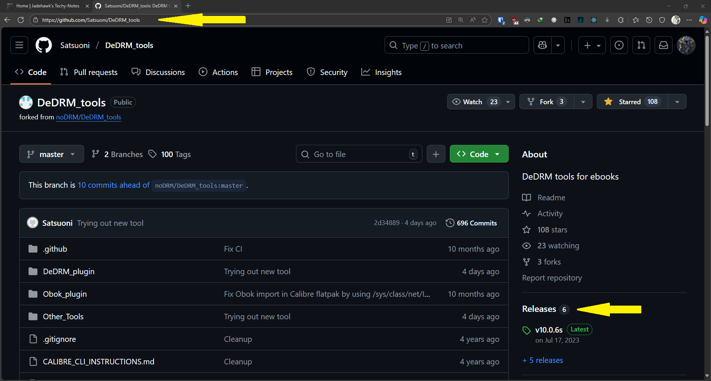
As you can see in the screenshot, we're visiting the GitHub repository for DeDRM_tools. You'll notice on the right side there's a "Releases" section showing version v10.0.6 as the latest release but we are looking for the PRE release. Click on the "Releases" section to access the download page.
Step 2: Download the Latest Release
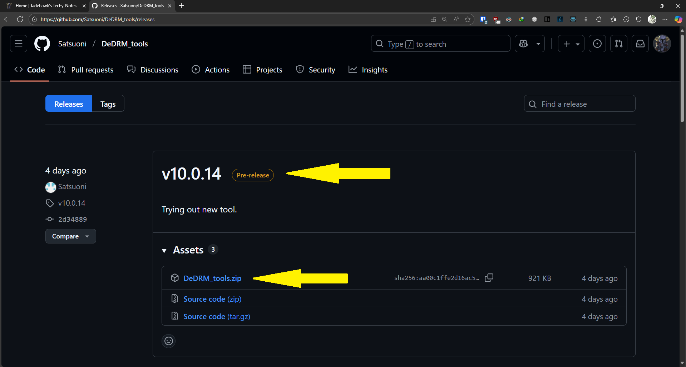
From the releases page, download the latest PRE Release v10.0.14 v10.0.15 v10.0.18 version of DeDRM_tools. The file will typically be named something like DeDRM_tools.zip. Save this file to a location you can easily remember, such as your Downloads folder.
Step 3: Extract the DeDRM Tools
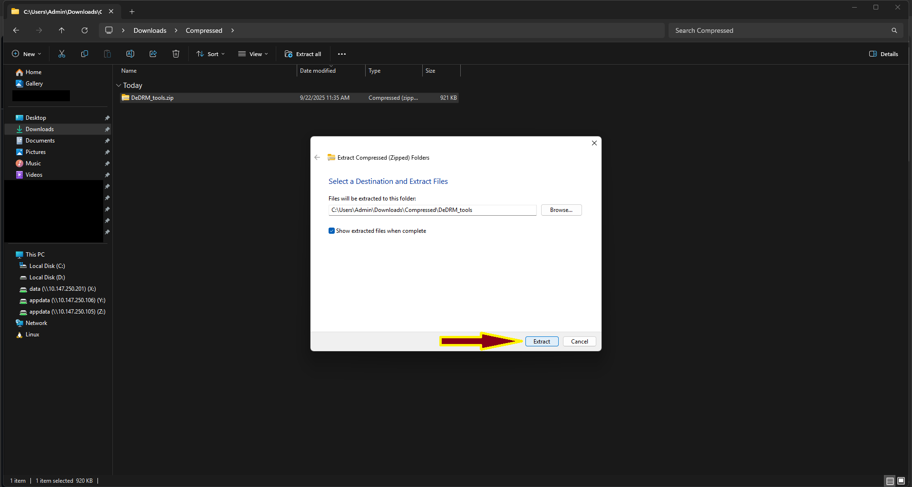
Once downloaded, extract the ZIP file to a folder on your computer. You'll need to access the contents later, so choose a location that's easy to navigate to. The extracted folder will contain various tools and plugins needed for DRM removal.
Step 4: Extracted Plugin for Calibre
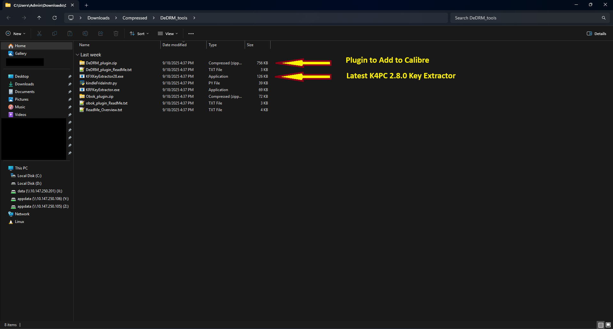
Launch Calibre on your computer. If you don't have Calibre installed, you can download it for free from calibre-ebook.com. Calibre is essential for this process as it will host the DeDRM plugin and manage your eBook library. Highlighted is the file we will need in step 07, to add to Calibre.
Step 5: Access Calibre Preferences and Plugins Section
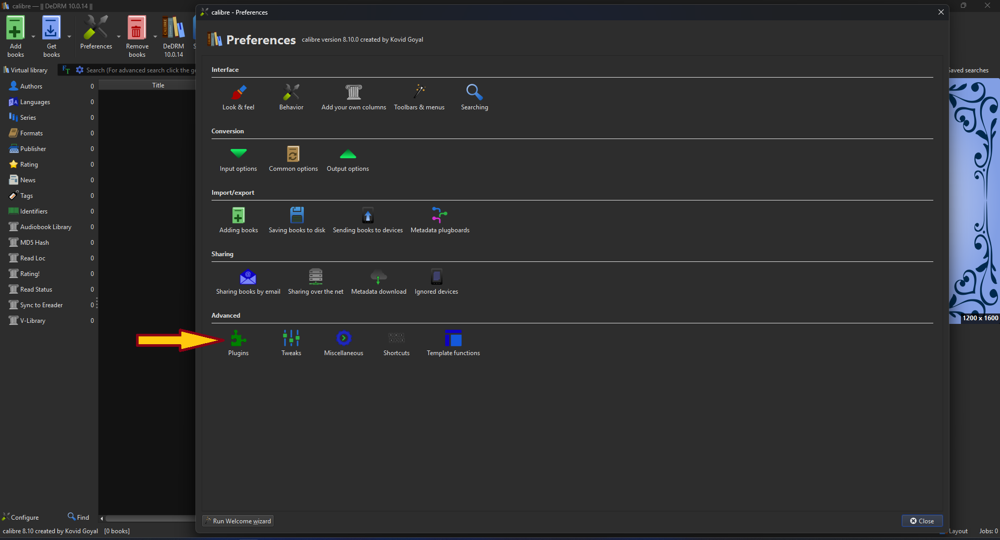
In Calibre, click on the "Preferences" button in the toolbar (highlighted with the red arrow in the screenshot). This will open the Preferences window where we can manage plugins and other settings.
Step 6: Navigate to Plugins Section
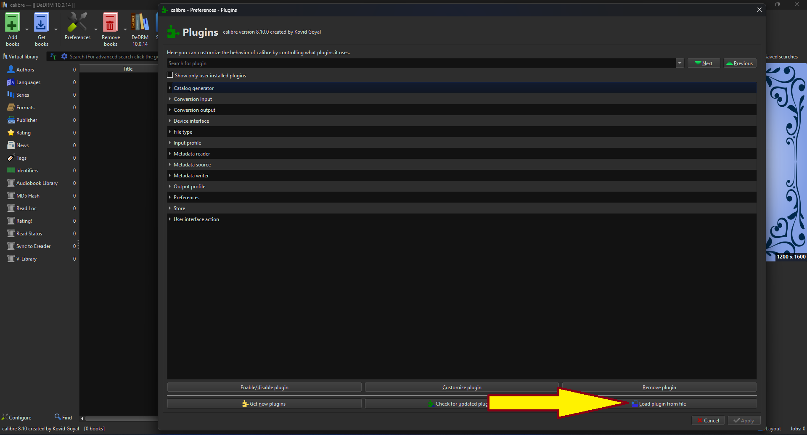
In the Preferences window, look for the "Load Plugin from file" section at the bottom. Click on it to load the file we extracted from DeDRM_tools.zip this is how we install plugins that are NOT available via the Calibre store due to legal requirements.
Step 7: Load Plugin from File Part #1
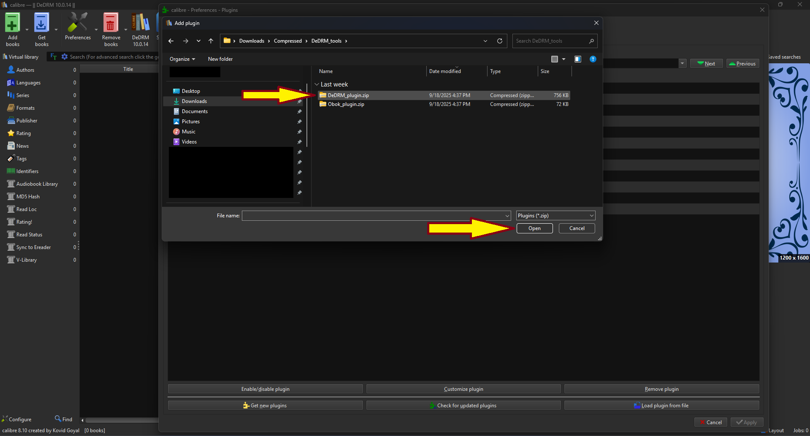
You'll now see the Plugins management interface. This is where Calibre displays all installed plugins and allows you to add new ones. We need to install the DeDRM plugin from the files we downloaded earlier.
Step 8: Load Plugin from File Part #2
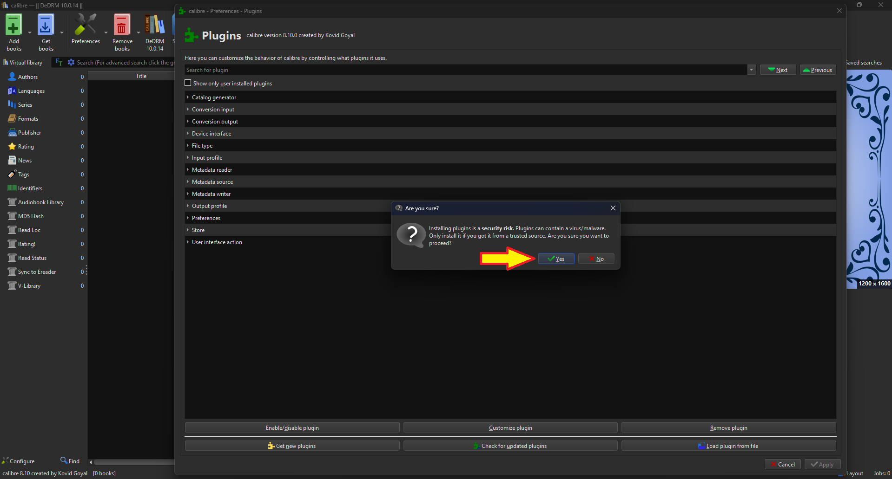
Just click "YES" on this step
Step 9: Load Plugin from File Part #3
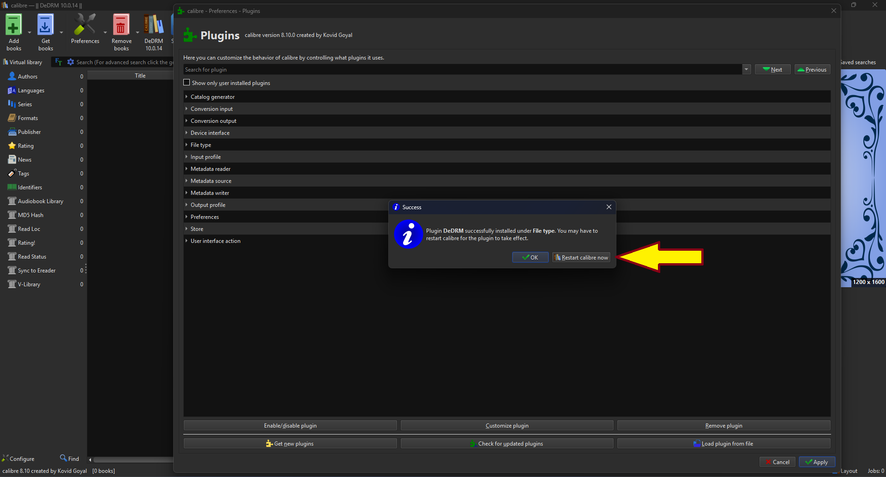
And on this Step click on "Restart Calibre now" once we restart the plugin will be installed and loaded in Calibre.
Step 10: Configure the DeDRM Plugin
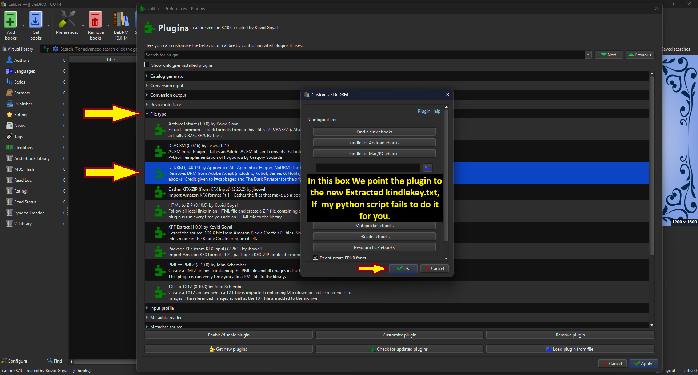
After restarting if you look again under Calibre Preferences / Plugins / File Type >>> You will see the new Plugin DeDRM v10.0.14 v10.0.15 v10.0..17 nstalled, if you Double Click it, you will open the configuration section
Unfortunately at this point we do not yet have the needed files to add to this screen, but if my script runs without issues this will be populated for you, in the event is not, well you know where to come to
do it manually.
The plugin needs to know where to find your Kindle encryption keys. You can either:
- Let the script automatically add your keys
- Manually point it to a key file (kindlekey.txt)
Step 10a: Addendum!! Almost forgot!
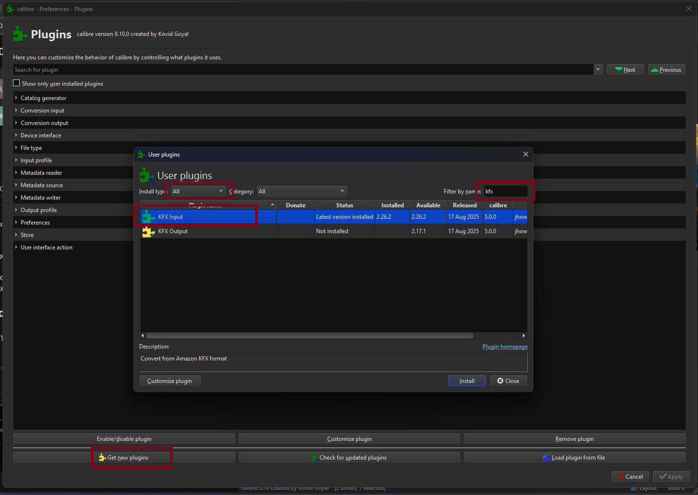
You need to make sure you install the "KFX Input" plugin from the "Get ne Plugins" Section in Calibre, This is the Calibre plugin store where you can find tons of fantastic and useful plugins to super charge your Calibre installation!.
Step 11: Lets buy 2 new books (Book #1)
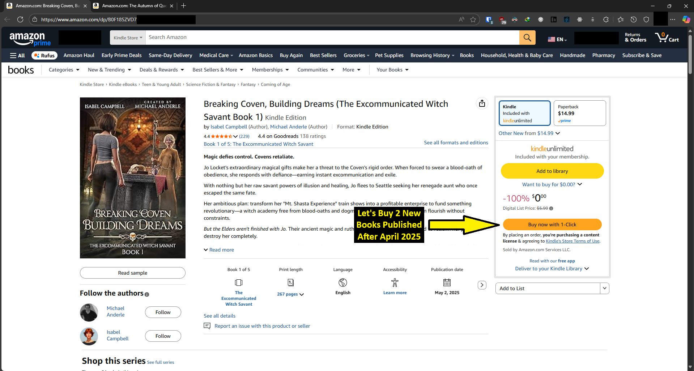
Notice this books was published on May 2, 2025
Step 12: Lets buy 2 new books (Book #2)
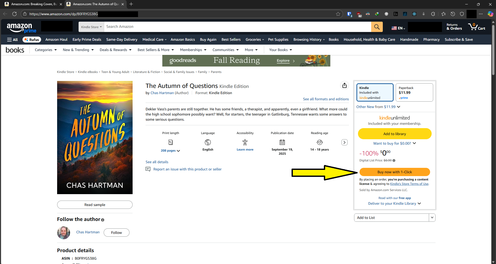
And this was published September 19, 2025 just 3 days ago.
Step 13: Open Kindle-For-PC
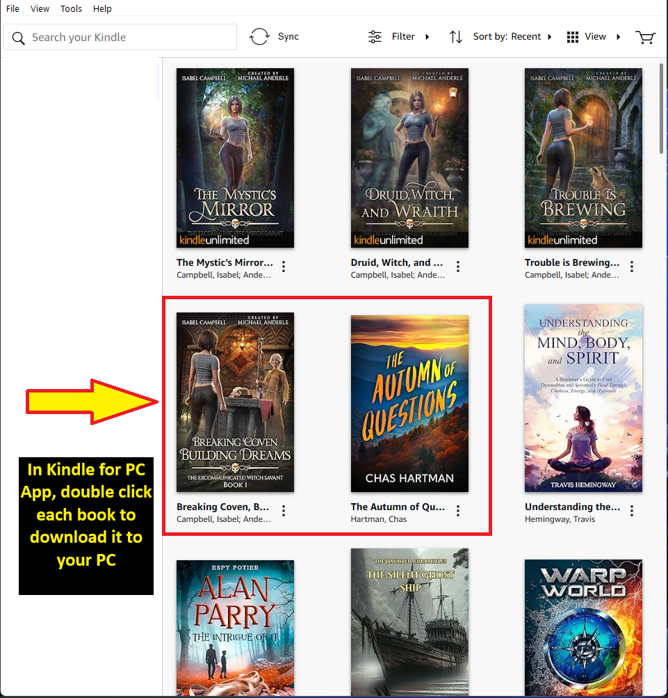
Open your latest version HAS TO BE 2.8.0(70980) version of Kindle-For-PC (K4PC), Click on Sync, and you should see your 2 new purchased books in the list.
Step 14: Download the books to your PC
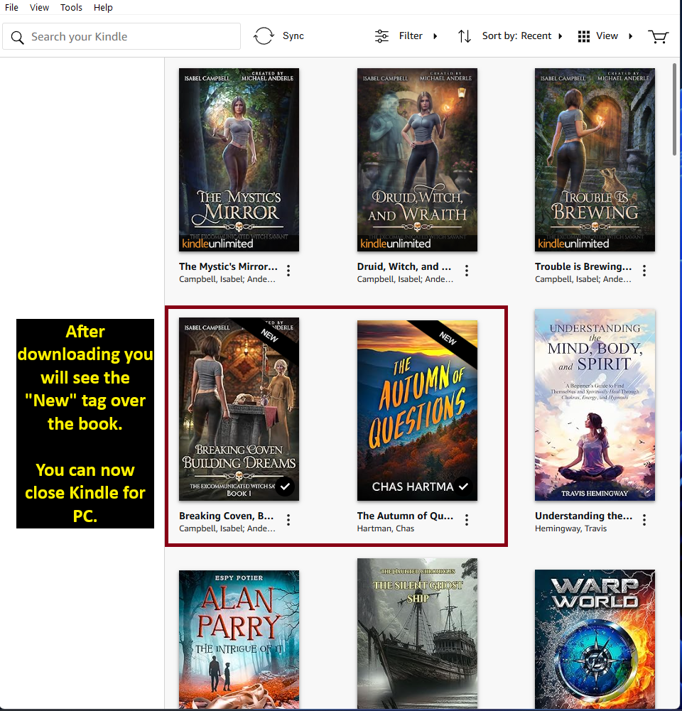
You need to double click to the books to have K4PC download your books to your PC. If you left everything default, the books should be downloaded to a folder inside your "DOCUMENTS" folder called "My Kindle Content".
You can see the "New" and the 'Check Mark" overlays when the books are already saved in your PC, you can close K4PC if you want now.
Step 15: Verify Downloaded Books and Tools
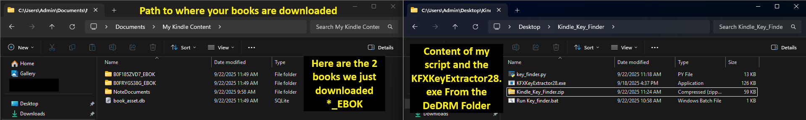
As shown in the screenshot, you should now have:
- Your downloaded Encrypted Kindle books (the .ebook files)
- The KFXKeyExtractor28.exe from the DeDRM folder
- My Kindle_key_finder.zip that contains the same KFXKeyExtractor28.exe found on the Github repo as part of the DeDRM_tools, and my python script, and a batch file to lauch the python script
- Script can be downloaded Here:
All Calibre Plugins are now included in the same zip file "/code/Calibre-Plugins"
Stick to K4PC version 2.8.0, tool tested on 2.8.3 but meant for 2.8.0 You have been warned.
The screenshot shows the path to where books are downloaded and the content of the script and KFXKeyExtractor28.exe from the DeDRM folder.
Step 16: Time to run the Script!!
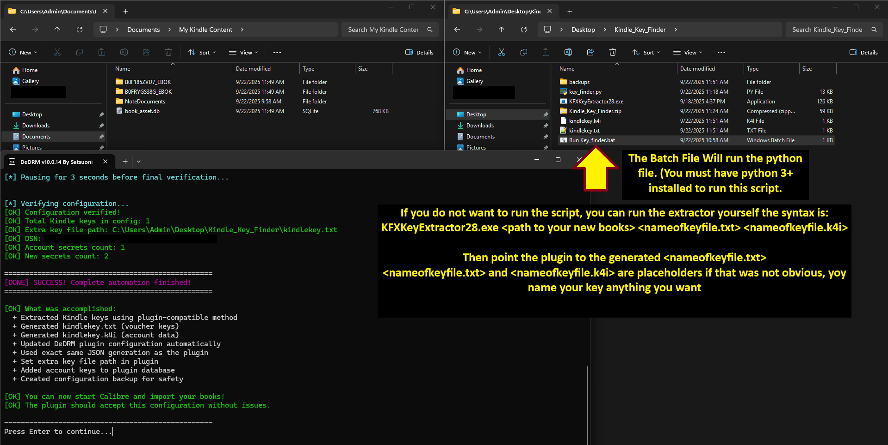
You should pick a permanent folder where to save the script files, since we will point the DeDRM Plugin we installed in Calibre to the files we are about to generate, so its preferable to make a new home for them, I like to keep them in the same folder where the new kindle books are saved in my case is : "C:\Users\Admin\Documents\My Kindle Content" and a new folder called "Key_Finder".
Run the batch file "Run_keyfinder_admin.vbs" and watch the magic that Satsuoni has created with his KFXKeyExtractor & KFXArchiver (NEW since v10.0.17)!!!
Step 17: Apply Configuration
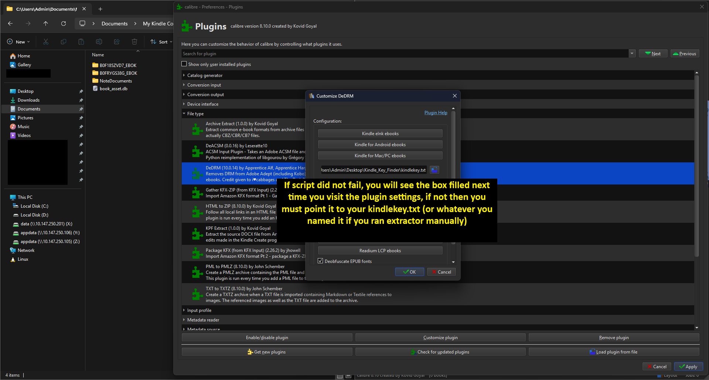
If all went well with the script you are technically done with the plugin configuration. BUT you should still swing by the plugin settings again and see if my script populated that empty box we had earlier, as you can see in this screenshot, there is text already inside the empty box, is actually pointing to the "kindlekey.txt" that should be in the same folder from where you ran "Run key_finder.bat", The program also created another file called "kindlekey.k4i" it may not be required but you can add this to the "Kindle for MAC.PC Ebooks" the button right above our now populated box.
Step 18: Test with the new Kindle Books
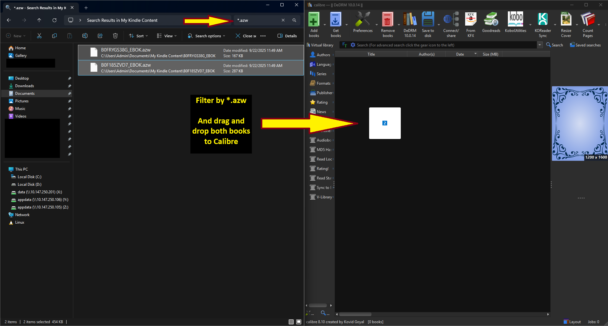
Add our new DRM-protected Kindle books to your Calibre library (Drag and Drop works best for me). If everything is configured correctly and Keys where successfully extracted, the DeDRM plugin will automatically remove the DRM protection when you import the book. You will endup with a books in Calibre in KFX format, that you can then convert to EPUB.
Step 19: Successful DRM Removal
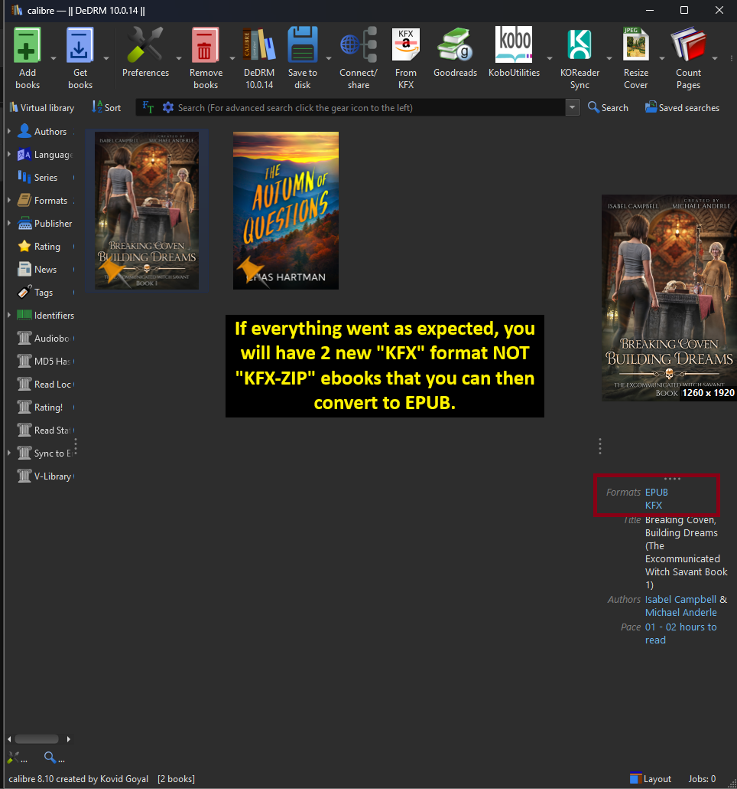
The screenshot shows the final result in Calibre with successfully converted books that are no longer DRM-protected. You can delete the KFX format after you have a clean EPUB for storage and transfering to your other non amazon ereaders (Kobo,Boox) it's what I do.
What's the Catch-22 with this method?:
The catch is simple, you must run the script or KeyExtractor EVERYTIME you download new books, the old method did not need you to, but with the latest DRM added to books released after April 2025, this is now required if you want to use the latest K4PC version 2.8.0(70980), you can go back to the old method, but you will need to transfer books published after April 2025 to your physical kindle and then from the kindle to Calibre. You pick your method. I like this better, much faster.
Troubleshooting Common Issues
Plugin Installation Problems
- Make sure you're using the correct plugin file from the DeDRM_tools package
- Restart Calibre after installing the plugin
- Check that you have the latest version of both Calibre and DeDRM tools
- Make sure you also have "KFX Input" plugin installed, or else you can not IMPORT "KFX books" which is technically what the .azw becomes during the drag and drop operation into Calibre
- Make sure you are running the OFFICIAL VERSION of python from python.org and not the 'Microsoft Store" version, this version runs in a "sandbox" environment blocking read/write access we need.
Key Extraction Issues
- Ensure your Kindle books are actually downloaded to your computer
- Try downloading more books, tool need to actually extract keys from KFX books and not all books have them so the more books you download before you run the Extractor, the better change to actually Extract keys.
- Make sure you're using the correct version of the key extractor for your Kindle app version
----- NEW FIND -----
- YMMV, but I confirmed this issue with the help of another user:
- Make sure only ONE (1) copy of K4PC is registered in your Amazon account. I had 2 copies, one on laptop and then a new one (Main PC) when creating the video tutorial, The version on laptop stop generating keys, and eventually so did the version on main PC. After deregistering all K4PC and resigning back on a single machine, all went back to normal, so keep this in mind.
Books Not Converting
- Verify that the kindlekey.txt file was created successfully
- Check that the DeDRM plugin is pointing to the correct key file
- Some newer Kindle formats may require updated tools
Format Issues
- If you get KFX-ZIP files instead of KFX files, the DRM removal may not have worked properly (Unless Using KFXArchiver as this tool GENERATES KFX_ZIP file formatted DRM FREE books - Tools added on v10.0.17)
- Try re-extracting your keys and reconfiguring the plugin
Manual Key Extraction Method:
In the event you are unable to run the script at all and want to do it manually, here is how is done:
There are 2 Tools included in the Code/Tools folder.
KFXKEYEXTRACTORxxx.exe and KFXARCHIVERxxx.exe both have close but different run commands, @Satsuoni made the tools is a way that they can be started from anywhere and they will attempt to locate your kindle for pc installation, however @Satsuoni does recommend running tools from the kindle installation folder directly.
For KFXKeyExtractor:
The command is as follow, I will use the path as it is in "MY LAPTOP", yours will differ slightly.
KFXKeyExtractor282.exe "C:\Users\Admin\Documents\My Kindle Content" KindleKeys.txt KindleKeys.k4i
This equals to KFXKeyExtractor "path-to-new-downloaded-kindle-books" "file-that-will-store-extracted-keys" "file-that-will-store-kindle-account-keys"
You will then pass these 2 generated files to the Calibre DeDRM Plugin using the Plugins GUI.
For KFXARCHIVER:
KFXArchiver283.exe "C:\Users\Admin\Documents\My Kindle Content" "C:\Users\Admin\Documents\My Kindle Content\Extracted_Books" KindleKeys.k4i
This equals to KFXArchiver "path-to-new-downloaded-kindle-books" "path-to-where-decrypted-books-will-be-written-to-THIS-PATH-MUST-EXIST-PRIOR-OF-RUNNING-TOOL" "file-that-will-store-kindle-account-keys"
This will generate the file with your kindle account keys (KindleKeys.k4i) however is NOT NEEDED if using KFXArchiver.
You will find ALL your successfully DeDRMed books in the OUTPUT folder you provided, all books will be in KFX-ZIP format but will import as KFX into calibre, just drag-and-drop into Calibre, make sure you have KFX Plugin installed.
This tutorial is for educational purposes only. DRM removal should only be performed on books you legally own. Always comply with your local copyright laws and the terms of service of your eBook retailer. The purpose of DRM removal should be to create personal backups or to read your legally purchased books on different devices
Conclusion
You now have a fully functional DeDRM setup that can remove DRM protection from your Kindle eBooks. This allows you to:
- Create backups of your legally purchased books
- Read books on any device or eBook reader
- Convert between formats (EPUB, MOBI, PDF, etc.)
- Preserve your library independent of any single platform
Remember to keep your DeDRM tools updated as Amazon occasionally changes their DRM methods. The community actively maintains these tools to ensure compatibility with the latest Kindle formats.
Happy reading!
Selfish Plug:
If you found this content useful, please swing by my YouTube channel and subscribe. I need as much help from you guys as I can. Thx
Here is the link:

Also have a BuyMeCoffee Link if so inclined.
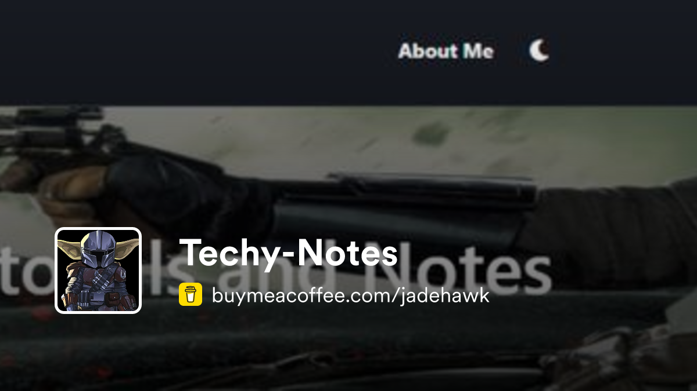